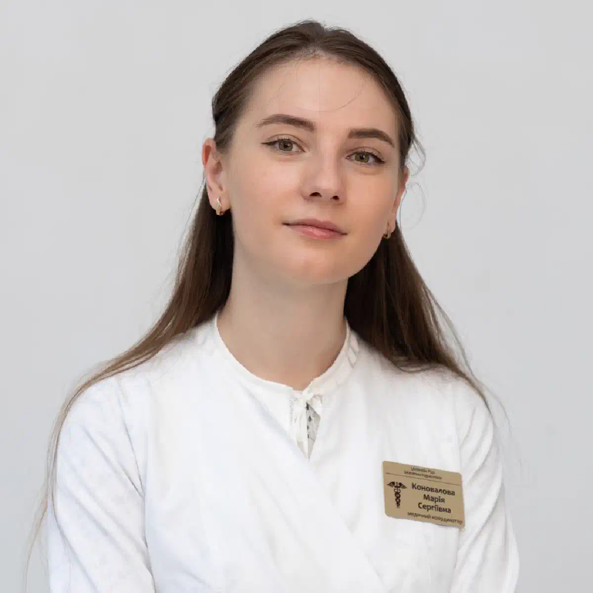

+38(068)
79 72 782
+38(068)
79 72 782Кодирование от алкоголизма уколом в Харькове
Препараты, цены и особенности процедуры


Бесплатная консультация, работаем круглосуточно 24/7
Препараты, цены и особенности процедуры

Дата написания: 19 окт. 2026 г.
Последнее обновление: 19 окт. 2026 г.
Кодирование от алкоголизма уколом в Харькове — метод медикаментозного лечения алкогольной зависимости, который может применяться для поддержания трезвости, уменьшения тяги к спиртному и снижения риска повторных запоев. Инъекционные препараты отличаются действующим веществом, механизмом воздействия, продолжительностью действия и возможными противопоказаниями. Для лечения алкогольной зависимости используются лекарственные средства на основе дисульфирама и налтрексона, однако не все препараты, представленные на рынке под названием «укол от алкоголизма», имеют одинаковую доказательную базу и зарегистрированную инъекционную форму. Кодирование от алкоголизма в Харькове проводится после консультации нарколога, оценки состояния здоровья и определения медицинских показаний. При длительном употреблении спиртного пациенту предварительно может потребоваться лечение алкогольного синдрома отмены. Медикаментозное кодирование рекомендуется сочетать с психологической поддержкой, поскольку одна инъекция не устраняет все механизмы алкогольной зависимости и не гарантирует полного отсутствия рецидивов.
Кодирование от алкоголизма уколом — распространенное название инъекционного введения лекарственных средств, используемых в программах лечения алкогольной зависимости. Принцип действия зависит от состава препарата. Дисульфирам нарушает метаболизм этанола, в результате чего употребление спиртного может вызвать выраженную негативную реакцию организма. Налтрексон действует иначе: он блокирует опиоидные рецепторы, связанные с подкрепляющим эффектом алкоголя, и может уменьшать вероятность повторного тяжелого употребления. Продолжительность воздействия определяется фармакологическими характеристиками конкретной лекарственной формы. Медикаментозное кодирование от алкоголизма не следует считать самостоятельным способом полного устранения зависимости. Устойчивость результата зависит от состояния пациента, выраженности патологического влечения к спиртному, продолжительности заболевания и дальнейшего лечения. Перед процедурой необходимы медицинское обследование, проверка противопоказаний и добровольное информированное согласие пациента.
Кодирование от алкогольной зависимости уколом может рассматриваться при регулярном употреблении спиртного, повторных запоях, потере контроля над количеством выпитого и трудностях с поддержанием длительной трезвости. Обращение к наркологу особенно важно, если употребление алкоголя сопровождается ухудшением здоровья, семейными конфликтами, нарушениями сна или возвращением к спиртному после предыдущих попыток лечения. Инъекционная терапия подходит не каждому пациенту. Возможность ее применения зависит от конкретного препарата, наличия противопоказаний, состояния печени, сердечно-сосудистой системы и сопутствующих заболеваний. При выраженной физической зависимости предварительно необходимо оценить риск алкогольной абстиненции. Консультация нарколога в Харькове помогает определить тяжесть заболевания, необходимость обследования и подходящую программу лечения. Кодирование не проводится без добровольного согласия пациента, а также не заменяет лечение острой интоксикации или тяжелого синдрома отмены.
Для медикаментозного лечения алкогольной зависимости используются препараты с различными механизмами воздействия. Наиболее известные действующие вещества — дисульфирам и налтрексон. В перечнях услуг наркологических учреждений также встречаются названия Эспераль, Тетлонг-250, Вивитрол и Аквилонг. Однако торговое название не всегда позволяет определить состав, способ введения и продолжительность действия препарата. Дисульфирам применяется для поддержания воздержания посредством формирования риска неприятной реакции при употреблении алкоголя. Налтрексон уменьшает подкрепляющий эффект спиртного и применяется для снижения риска повторного тяжелого употребления. Вивитрол представляет собой пролонгированную инъекционную форму налтрексона. Для препаратов под другими торговыми названиями требуется проверка актуальной государственной регистрации и официальной инструкции.
Дисульфирам — лекарственное средство, используемое для лечения алкогольной зависимости у пациентов, заинтересованных в полном воздержании от спиртного. Препарат блокирует фермент ацетальдегиддегидрогеназу, который участвует в переработке продуктов распада этанола. При употреблении алкоголя на фоне действия дисульфирама в организме накапливается ацетальдегид, способный вызвать выраженную токсическую реакцию. Возможны покраснение лица, головная боль, тошнота, рвота, учащенное сердцебиение и снижение артериального давления. В тяжелых случаях развиваются опасные нарушения сердечно-сосудистой системы. Кодирование Дисульфирамом в Харькове требует предварительной оценки противопоказаний и проверки разрешенной формы препарата. Наличие дисульфирама в таблетках не означает автоматического разрешения его инъекционного введения. Лечение этим веществом не устраняет непосредственно психологическую тягу к алкоголю и должно сопровождаться медицинским наблюдением и психологической поддержкой.
Эспераль — торговое название лекарственного препарата на основе дисульфирама, применяемого для профилактики возвращения к употреблению алкоголя. Механизм действия связан с нарушением переработки этанола и накоплением ацетальдегида при употреблении спиртного. Это может вызывать неприятную и потенциально опасную реакцию, вследствие чего пациент получает дополнительный стимул придерживаться трезвости. В Государственном реестре лекарственных средств Украины Эспераль зарегистрирован в таблетированной форме. Поэтому при предложении кодирования Эспералем уколом необходимо отдельно проверять, какое именно средство предполагается вводить, имеет ли оно разрешенную инъекционную форму и соответствует ли процедура официальной инструкции. Перед лечением учитываются состояние сердца, печени, нервной системы и возможные лекарственные взаимодействия. Эффективность терапии зависит от соблюдения рекомендаций, мотивации пациента и дополнительных методов лечения алкогольной зависимости.
Тетлонг-250 — торговое название, которое встречается в практике медикаментозного кодирования от алкогольной зависимости. Препарат описывается как средство на основе дисульфирама, предназначенное для формирования непереносимости алкоголя. Механизм действия связан с блокированием ферментов, участвующих в переработке ацетальдегида. При употреблении спиртного во время действия дисульфирама возможно развитие выраженной реакции с тошнотой, сердцебиением, снижением артериального давления и другими опасными проявлениями. Кодирование Тетлонгом-250 требует проверки актуального регистрационного статуса препарата, его состава, лекарственной формы и разрешенного способа введения. Противопоказания могут включать тяжелые заболевания сердца, определенные психические расстройства, нарушения функции печени и другие состояния.
Налтрексон применяется в лечении алкогольной зависимости и относится к антагонистам опиоидных рецепторов. В отличие от дисульфирама, препарат не формирует специфическую токсическую реакцию при употреблении спиртного. Его действие направлено на уменьшение подкрепляющего эффекта алкоголя, что может способствовать снижению количества эпизодов тяжелого употребления и поддержанию трезвости. Налтрексон существует в таблетированной форме и в виде отдельных пролонгированных инъекционных препаратов. Кодирование Налтрексоном рассматривается после медицинского обследования и исключения противопоказаний. Особое значение имеет отсутствие приема опиоидных обезболивающих и других опиоидов, поскольку налтрексон может спровоцировать синдром отмены у человека с опиоидной зависимостью. Также учитываются заболевания печени и возможные лекарственные взаимодействия. Препарат не предназначен для самостоятельного устранения алкогольной абстиненции и наиболее целесообразен в составе комплексной программы лечения.
Вивитрол — пролонгированная инъекционная форма налтрексона, используемая для лечения алкогольной зависимости при наличии соответствующих показаний. Препарат блокирует опиоидные рецепторы, которые участвуют в формировании подкрепляющего эффекта употребления алкоголя. Это может уменьшать тягу к спиртному и вероятность эпизодов тяжелого употребления. Согласно инструкции зарегистрированной в США формы Вивитрола, препарат вводится глубоко внутримышечно один раз в четыре недели или ежемесячно. Кодирование Вивитролом в Харькове требует предварительной оценки состояния пациента, проверки наличия разрешенного препарата и исключения противопоказаний. Перед применением необходимо сообщить врачу обо всех принимаемых лекарствах, особенно опиоидных анальгетиках. Вивитрол не предназначен для внутривенного введения. При необходимости терапия может продолжаться несколько месяцев, однако одна инъекция не обеспечивает действия на протяжении года.
Аквилонг — название, встречающееся в предложениях услуг медикаментозного кодирования от алкогольной зависимости. В коммерческих описаниях его обычно связывают с препаратами на основе дисульфирама и так называемой запретительной терапией. Предполагаемый механизм связан с нарушением переработки этанола и возможным развитием негативной реакции при употреблении спиртного. Однако для объективной оценки кодирования Аквилонгом от алкоголизма необходимо подтвердить состав конкретного средства, производителя, регистрацию, разрешенный способ введения и результаты клинических исследований. Указание срока кодирования на один год или несколько лет само по себе не доказывает соответствующей продолжительности фармакологического действия. При отсутствии достоверной информации о лекарственном средстве предпочтение следует отдавать зарегистрированным препаратам с изученным механизмом воздействия. Перед выбором терапии необходима консультация нарколога с оценкой противопоказаний и возможных рисков.
Авторское кодирование от алкоголизма в три этапа — название комплексного подхода, содержание которого определяется конкретной программой лечения. Подобные предложения могут включать предварительную медицинскую подготовку, применение выбранного лекарственного средства и последующую психологическую поддержку. Однако единого стандартизированного протокола трехэтапного инъекционного кодирования не существует. Поэтому важно уточнять, какие препараты применяются, каким способом вводятся и какие исследования подтверждают их безопасность. Трехэтапное кодирование от алкоголизма нельзя автоматически считать более эффективным по сравнению с лечением одним зарегистрированным препаратом. Количество этапов не гарантирует длительной ремиссии или отсутствия повторных запоев. Особенно осторожно следует относиться к обещаниям результата на срок от одного до пяти лет после одной процедуры. Эффективность комплексного лечения определяется медицинской обоснованностью применяемых методов, регулярностью наблюдения и дальнейшей психотерапевтической поддержкой.
Основное отличие препаратов для кодирования от алкогольной зависимости заключается в действующем веществе и механизме воздействия. Дисульфирам вызывает риск выраженной реакции при употреблении спиртного и применяется для поддержки полного воздержания. Эспераль является торговым названием препарата дисульфирама, при этом его зарегистрированная в Украине таблетированная форма не равнозначна инъекционному препарату. Тетлонг-250 также описывается как средство на основе дисульфирама, но требует проверки актуальной регистрации. Вивитрол содержит налтрексон, который не вызывает дисульфирам-алкогольной реакции, а уменьшает подкрепляющий эффект спиртного. Для Аквилонга необходимо отдельно подтверждать состав и лекарственную форму. Сравнение препаратов для кодирования от алкоголизма должно учитывать не только заявленную продолжительность лечения, но и клинические показания, противопоказания, зарегистрированный способ применения и доказанную эффективность.
Медикаментозное кодирование может осуществляться разными способами в зависимости от выбранного препарата. Таблетированные средства принимаются по назначенной врачом схеме и обычно требуют регулярного соблюдения режима лечения. Пролонгированные инъекционные препараты позволяют поддерживать действие лекарственного вещества на протяжении периода, установленного официальной инструкцией. Подшивка предполагает хирургическую имплантацию определенной лекарственной формы под кожу. Однако не все импланты имеют убедительные доказательства продолжительного фармакологического действия. Подшивка от алкоголизма в Харькове отличается от инъекционной терапии необходимостью учитывать риски хирургического вмешательства и особенности конкретного импланта. Укол также не является универсально более эффективным вариантом по сравнению с таблетками. Выбор способа введения зависит от зарегистрированной лекарственной формы, состояния пациента, противопоказаний, способности соблюдать назначения и целей лечения алкогольной зависимости.
Вопрос о том, какой укол от алкоголизма самый сильный, часто возникает при выборе медикаментозного лечения. Однако в медицинской практике не существует универсального препарата, который был бы наиболее эффективным для всех пациентов. Дисульфирам и налтрексон действуют по разным механизмам, поэтому их нельзя объективно сравнивать только по выраженности реакции организма или продолжительности заявленного кодирования. Дисульфирам может вызывать тяжелую реакцию при употреблении спиртного, но это не означает, что он всегда обеспечивает лучший результат лечения. Налтрексон воздействует на систему подкрепления и может снижать частоту тяжелого употребления алкоголя. Самый эффективный укол от алкоголизма определяется индивидуально с учетом тяжести зависимости, сопутствующих заболеваний, противопоказаний и целей пациента. При выборе препарата важнее доказанная эффективность, безопасность и возможность длительного наблюдения, чем высокая дозировка или рекламируемая «сила» кодирования.
Выбор препарата для кодирования от алкогольной зависимости должен основываться на результатах медицинского обследования и индивидуальных особенностях пациента. Врач учитывает продолжительность употребления спиртного, частоту запоев, выраженность патологического влечения к алкоголю, наличие хронических заболеваний и предыдущий опыт лечения. Если цель пациента — полное воздержание, могут рассматриваться различные медикаментозные методы поддержки трезвости. При выраженной тяге к спиртному возможно применение средств, воздействующих на систему подкрепления. Особое значение имеют противопоказания, лекарственные взаимодействия и доступность зарегистрированных препаратов. Консультация нарколога перед кодированием помогает определить, подходит ли человеку инъекционная терапия или целесообразнее использовать таблетированные средства и психотерапевтическую поддержку. Правильно выбранная программа лечения должна учитывать не только фармакологическое действие препарата, но и необходимость последующей профилактики рецидивов.
Период воздержания от спиртного перед медикаментозным кодированием зависит от выбранного лекарственного средства, продолжительности употребления алкоголя и наличия физической зависимости. Перед процедурой необходимо исключить алкогольное опьянение и оценить риск развития синдрома отмены. Для таблетированного дисульфирама стандартные рекомендации предусматривают определенный период трезвости перед началом лечения; врач может рекомендовать более длительную подготовку в зависимости от состояния пациента. Для инъекционных средств требования определяются инструкцией конкретной зарегистрированной формы. При лечении пролонгированным налтрексоном важно учитывать отсутствие активного употребления алкоголя на момент первой инъекции и исключить прием опиоидов. Подготовка к кодированию от алкоголизма особенно важна после длительного запоя, когда резкое самостоятельное прекращение употребления может вызвать тяжелую абстиненцию. Безопасную продолжительность воздержания определяет нарколог после оценки состояния здоровья.
Кодирование от алкоголизма уколом сразу после продолжительного запоя без предварительной медицинской оценки не рекомендуется. После нескольких дней интенсивного употребления спиртного у пациента могут наблюдаться обезвоживание, электролитные нарушения, повышение артериального давления, учащенное сердцебиение, тремор, тревожность и бессонница. При сформировавшейся физической зависимости прекращение употребления алкоголя способно вызвать синдром отмены, который в тяжелых случаях сопровождается судорогами и алкогольным делирием. Поэтому первоочередной задачей является определение тяжести состояния и необходимости медицинской помощи. Вывод из запоя в Харькове может предшествовать началу программы медикаментозного кодирования. После стабилизации состояния, устранения острых симптомов и обследования врач определяет возможность применения выбранного препарата. При тяжелой абстиненции, нарушении сознания или судорогах требуется экстренная медицинская помощь и лечение в стационаре.
Детоксикация перед кодированием может потребоваться пациентам с осложнениями длительного употребления спиртного, обезвоживанием, электролитными нарушениями и симптомами алкогольной абстиненции. Объем медицинской помощи определяется после осмотра, оценки артериального давления, пульса, неврологического состояния и сопутствующих заболеваний. Лечение алкогольного синдрома отмены может включать препараты для предупреждения опасных осложнений, витаминную поддержку и коррекцию обменных нарушений. Капельница от алкоголя в Харькове применяется при наличии медицинских показаний, например при выраженном обезвоживании или невозможности восполнить жидкость через рот. При этом инфузионная терапия сама по себе не устраняет алкогольную зависимость и не заменяет полноценное лечение абстиненции. Детоксикация от алкоголя может проводиться амбулаторно или в стационаре в зависимости от состояния пациента. После стабилизации здоровья возможно обсуждение медикаментозного кодирования и дальнейшей программы поддержания трезвости.
Процедура медикаментозного кодирования от алкоголизма начинается с консультации нарколога и оценки состояния пациента. Врач уточняет продолжительность употребления спиртного, наличие запоев, хронические заболевания, принимаемые лекарства и предыдущие попытки лечения. При необходимости назначаются лабораторные исследования, электрокардиография и дополнительное обследование. После определения показаний специалист выбирает препарат, проверяет противопоказания и объясняет особенности его действия. Процедура кодирования от алкоголизма уколом в Харькове должна проводиться с использованием соответствующей зарегистрированной лекарственной формы и согласно официальной инструкции. Способ введения зависит от конкретного средства. Например, Вивитрол вводится глубоко внутримышечно, а не внутривенно. После процедуры пациент получает рекомендации относительно дальнейшего наблюдения, возможных побочных реакций и ограничений. Дополнительное значение имеют психологическая поддержка и соблюдение согласованной программы лечения алкогольной зависимости.
Срок действия медикаментозного кодирования определяется лекарственной формой, действующим веществом, фармакокинетическими характеристиками и схемой лечения. В предложениях наркологических услуг встречается кодирование на 3, 6 и 12 месяцев, однако заявленный срок не всегда соответствует продолжительности воздействия одной инъекции. Например, пролонгированный налтрексон в форме Вивитрола вводится приблизительно один раз в четыре недели, поэтому длительная терапия предполагает повторные введения препарата. Для других лекарственных средств необходимо проверять инструкции и доказательства продолжительности действия. Кодирование от алкоголизма на 3, 6 или 12 месяцев не обеспечивает гарантированного воздержания на указанный период. Даже при соблюдении медикаментозной терапии возможны психологическая тяга и возвращение к употреблению спиртного. Эффективность лечения зависит от совокупности факторов, включая мотивацию пациента, психотерапевтическую поддержку и регулярное наблюдение нарколога.
Употребление спиртного во время действия дисульфирама может привести к развитию выраженной дисульфирам-этаноловой реакции. Препарат препятствует нормальной переработке ацетальдегида, который образуется при распаде алкоголя. В результате могут появиться покраснение лица, сильная головная боль, тошнота, рвота, сердцебиение, головокружение и снижение артериального давления. В тяжелых случаях возможны нарушения сердечного ритма, затруднение дыхания, потеря сознания и другие опасные осложнения. Кодирование Дисульфирамом требует полного понимания пациентом риска употребления спиртного на фоне терапии. Самостоятельные алкогольные пробы для проверки действия препарата недопустимы. Следует учитывать возможное присутствие этанола в отдельных лекарственных средствах и других продуктах. При боли в груди, выраженной одышке, нарушении сознания или резком ухудшении состояния после употребления алкоголя необходимо немедленно вызвать экстренную медицинскую помощь по номеру 103 или 112.
Противопоказания к медикаментозному кодированию зависят от действующего вещества, лекарственной формы и общего состояния пациента. Для дисульфирама существенное значение имеют тяжелые сердечно-сосудистые заболевания, некоторые психические расстройства, нарушения функции печени и лекарственные взаимодействия. Налтрексон противопоказан при применении опиоидных препаратов и определенных других состояниях. Возможные побочные реакции включают головную боль, тошноту, слабость, нарушения пищеварения и индивидуальные реакции на лекарственное средство. После инъекционного введения также возможны болезненность, воспаление и другие местные осложнения. Противопоказания к кодированию от алкоголизма должны оцениваться наркологом до начала терапии. При необходимости проводятся лабораторные исследования, электрокардиография и дополнительные консультации специалистов. Безопасность лечения зависит от соблюдения инструкции препарата, правильного определения медицинских показаний и последующего наблюдения.
Медикаментозное кодирование не гарантирует полного избавления от алкогольной зависимости после одной процедуры. Причинами недостаточного эффекта могут быть неподходящий метод лечения, отсутствие подтвержденного действия конкретного препарата, недостаточная мотивация пациента и прекращение дальнейшей терапии. Даже при правильно подобранном лекарственном средстве могут сохраняться психологическое влечение к алкоголю, тревожность, депрессивные симптомы и привычные ситуации, провоцирующие употребление. Важное значение имеют семейные отношения, социальное окружение и способность справляться со стрессом без спиртного. Лечение алкоголизма в Харькове рекомендуется рассматривать как комплексную программу, включающую медицинскую помощь, психотерапию и профилактику рецидивов. Если после кодирования человек снова начинает употреблять алкоголь, необходима повторная оценка состояния и возможная коррекция лечебной тактики. Возвращение к употреблению не означает невозможности дальнейшего восстановления.
Раскодировка от алкоголизма — распространенное название прекращения действия ранее проведенного кодирования или изменения назначенной медикаментозной терапии. Возможность отмены зависит от конкретного препарата и его лекарственной формы. Некоторые таблетированные средства прекращают принимать по согласованию с врачом, однако их фармакологический эффект может сохраняться определенное время. Пролонгированные инъекционные препараты действуют до постепенного выведения лекарственного вещества из организма. Универсального средства, способного мгновенно нейтрализовать действие любого препарата для кодирования, не существует. Раскодировка от алкоголизма в Харькове требует предварительной консультации нарколога, особенно при появлении серьезных побочных реакций или необходимости изменения лечения. Самостоятельное употребление спиртного с целью проверки окончания действия препарата может быть опасным. Тактика дальнейшей помощи определяется с учетом ранее применявшегося лекарственного средства, состояния здоровья и риска возвращения к употреблению алкоголя.
Психологическая поддержка после медикаментозного кодирования является важной частью комплексного лечения алкогольной зависимости. Лекарственные препараты могут помогать поддерживать трезвость или уменьшать частоту тяжелого употребления, однако не устраняют автоматически сформировавшиеся привычки, эмоциональные проблемы и социальные причины употребления спиртного. После кодирования пациенту может потребоваться работа с тревожностью, депрессивными симптомами, семейными конфликтами и ситуациями, повышающими риск повторного употребления. Психологическая помощь при алкогольной зависимости включает мотивационное консультирование, когнитивно-поведенческую терапию, семейную поддержку и другие доказательные методы. Дополнительную пользу могут приносить группы взаимопомощи и регулярное наблюдение специалистов. Профилактика рецидивов предполагает формирование новых способов преодоления стресса, распознавание ситуаций риска и своевременное обращение за помощью при усилении тяги к алкоголю.
Анонимное кодирование от алкоголизма уколом в Харькове интересует пациентов, которые хотят получить наркологическую помощь с соблюдением конфиденциальности. Опасения разглашения медицинской информации, проблем на работе и негативного отношения окружающих нередко становятся причиной откладывания лечения. Медицинские учреждения обязаны соблюдать требования законодательства относительно врачебной тайны, оформления документации и защиты персональных данных. При этом понятие анонимного лечения не всегда означает полное отсутствие медицинских записей. Анонимное кодирование от алкоголизма в Харькове необходимо рассматривать с учетом порядка предоставления конкретной услуги и действующих правовых требований. Перед процедурой рекомендуется уточнить условия конфиденциальности, необходимость обследования, состав препарата и правила оформления медицинской документации. Медикаментозное кодирование должно проводиться добровольно, после информирования пациента о возможных рисках, противопоказаниях и особенностях дальнейшего лечения.
Сделать укол для кодирования от алкоголизма в Харькове можно в медицинском учреждении, которое имеет право предоставлять соответствующую наркологическую помощь и использует разрешенные лекарственные средства. При выборе специалиста следует учитывать наличие медицинской лицензии, квалификацию врача, возможность предварительного обследования и дальнейшего наблюдения. Важно уточнить действующее вещество препарата, способ введения, подтвержденную продолжительность действия и возможные противопоказания. Если предлагается кодирование препаратом под коммерческим названием, желательно проверить его регистрационный статус и официальную инструкцию. При выборе, где закодироваться от алкоголизма в Харькове, не стоит ориентироваться исключительно на минимальную цену или обещания полного избавления от зависимости после одной инъекции. Предпочтение следует отдавать медицински обоснованным программам, которые предусматривают индивидуальный подбор лечения, психологическую поддержку и профилактику повторных запоев.
Наркологическая помощь в Харькове необходима пациентам, которые сталкиваются с длительным употреблением спиртного, повторными запоями, алкогольной абстиненцией и трудностями при самостоятельном отказе от алкоголя. Обращение к специалисту позволяет оценить общее состояние здоровья, определить риск осложнений и подобрать безопасную тактику лечения. При стабильном состоянии отдельные медицинские мероприятия могут проводиться амбулаторно или дома по решению врача. При тяжелой абстиненции, судорогах, алкогольном делирии и нарушении сознания необходима экстренная медицинская помощь. Круглосуточный вызов нарколога в Харькове может использоваться для организации консультации и предварительной оценки возможности медицинской помощи на дому, если такая услуга доступна. После стабилизации состояния пациент может обсудить медикаментозное кодирование, психологическую поддержку и дальнейшую программу восстановления. Комплексное лечение алкогольной зависимости направлено на снижение медицинских рисков, поддержание трезвости и профилактику повторных запоев.
Телефон для консультации и вызова нарколога на дом в Харькове: +38(050-021-69-57)

Статья проверена экспертом
Могучев Станислав
Врач терапевт, ординатор
Возможно интересная статья:
Какой укол вызывает отвращение к алкоголю

Кодирование от алкоголизма — это общее название методов, направленных на поддержание отказа от употребления алкоголя. В зависимости от выбранного подхода могут применяться лекарственные препараты, психотерапевтические методы или их сочетание. Перед процедурой врач оценивает состояние пациента, противопоказания и готовность соблюдать трезвость.
Механизм зависит от метода. Некоторые препараты вызывают выраженную непереносимость алкоголя или уменьшают его субъективно приятные эффекты и тягу. Психотерапевтические методы направлены на формирование устойчивой установки на трезвость и изменение отношения к употреблению алкоголя. Кодирование обычно рассматривается как часть комплексного лечения зависимости.
Применяются медикаментозные и психотерапевтические методы. К медикаментозным относят препараты на основе дисульфирама и средства, влияющие на систему вознаграждения и тягу к алкоголю, например налтрексон. Также используются психотерапевтические подходы, в том числе метод Довженко и другие техники работы с мотивацией и поведением. Конкретный метод подбирается индивидуально.
Кодирование уколом предполагает введение лекарственного препарата по назначению врача. Действие зависит от конкретного действующего вещества: одни препараты направлены на формирование непереносимости алкоголя, другие — на уменьшение тяги или эффекта от его употребления. Перед введением обязательно оцениваются противопоказания и период трезвости.
Подшивкой обычно называют введение или имплантацию препарата длительного действия, чаще всего на основе дисульфирама. Его задача — создать медицинский барьер для употребления алкоголя на определённый период. Перед процедурой пациент должен быть трезвым и пройти осмотр врача.
Метод Довженко относится к психотерапевтическим способам воздействия и основан на формировании установки на отказ от алкоголя на определённый срок. Процедура проводится без введения лекарственного препарата. Эффективность зависит от мотивации пациента и индивидуальной восприимчивости, поэтому метод лучше рассматривать как часть комплексного лечения, а не как единственный способ терапии.
Период трезвости зависит от выбранного метода, состояния пациента и используемого препарата. Во многих случаях требуется 3-5 дней полного воздержания от алкоголя. Точный срок определяет врач после консультации, поскольку проведение процедуры на фоне интоксикации или выраженного абстинентного синдрома может быть небезопасным.
Обычно сразу после длительного запоя кодирование не проводят. Сначала необходимо прекратить употребление алкоголя, стабилизировать состояние, при необходимости провести детоксикацию и дождаться уменьшения проявлений абстинентного синдрома. После этого врач оценивает готовность пациента к кодированию и выбирает подходящий метод.
Некоторые виды медикаментозного или психотерапевтического лечения могут проводиться на дому, если состояние пациента стабильное и выбранный метод допускает такой формат. Перед процедурой врач должен оценить противопоказания, период трезвости и общее состояние. Методы, требующие хирургического вмешательства, специального оборудования или наблюдения, проводятся в медицинском учреждении.
Срок действия зависит от метода и препарата. Некоторые медикаментозные варианты рассчитаны на несколько недель или месяцев, другие — на более длительный период. Психотерапевтическое кодирование также может устанавливаться на определённый срок. Конкретную продолжительность врач обсуждает с пациентом до проведения процедуры.
Да. Противопоказания зависят от выбранного метода и могут включать тяжёлые заболевания сердца и сосудов, печени, острые психические расстройства, выраженную алкогольную интоксикацию, абстинентный синдром и другие состояния. Перед кодированием необходим медицинский осмотр и уточнение хронических заболеваний и принимаемых препаратов.
Последствия зависят от метода. При использовании дисульфирама употребление алкоголя может вызвать тяжёлую реакцию с покраснением кожи, тошнотой, рвотой, падением давления, сердцебиением и другими опасными симптомами. При других методах такой реакции может не быть, но употребление алкоголя повышает риск рецидива зависимости. При ухудшении самочувствия после алкоголя на фоне кодирования необходимо обратиться за медицинской помощью.
Плановое кодирование проводится только при информированном и добровольном согласии пациента. Человек должен понимать выбранный метод, возможные риски, ограничения и последствия употребления алкоголя после процедуры. Если пациент отказывается от лечения, родственники могут обратиться к специалисту для консультации по мотивационной работе.
Это зависит от использованного метода и препарата. В некоторых случаях врач может скорректировать лечение или отменить действие определённых лекарственных схем, но «раскодирование» возможно не для всех методов и не означает мгновенного устранения действия препарата. Решение принимается только после консультации с врачом и оценки причины, по которой пациент хочет прекратить действие кодирования.
Александр

Решила сделать укол от алкоголизма по рекомендации подруги, которая проходила эту процедуру в этом же центре. Я сомневалась, но врачи всё объяснили, успокоили. После укола не чувствую тяги к алкоголю, хотя раньше сложно было представить день без выпивки. Сейчас наслаждаюсь трезвостью, чувствую себя намного лучше.
Анонимно
Дуже довго не міг самостійно позбавитися залежності, тому зважився на підшивку. Процедура пройшла успішно, і з того часу я навіть не думаю про спиртне. Страх перед можливими наслідками допомагає триматися на плаву, а підтримка фахівців – величезна підмога у цьому нелегкому шляху. Центр надає як фізичну, а й моральну допомогу. Вдячний їм за другий шанс.
Анонимно
Я никогда не думал, что психологическое воздействие может настолько сильно повлиять на мою жизнь. Врач помог осознать всю серьезность ситуации, и теперь алкоголь не вызывает у меня никакого интереса. Процедура безопасна и эффективна, рекомендую тем, кто хочет по-настоящему изменить свою жизнь.
Анонимно
Я прошла кодирование гипнозом, и это было удивительное переживание. Во время сеанса я почувствовала глубокое расслабление, а потом – будто внутри что-то изменилось. Сейчас я свободна от алкоголя и наслаждаюсь этим состоянием. Благодарю центр за профессионализм и заботу! Отдельная благодарность Станиславу Вячеславовичу
Анонимно
Чесно кажучи, боявся рецидиву, але з процедури минуло півроку, і я навіть не думаю про випивку. Життя почало змінюватися на краще. Дякуємо лікарям за підтримку та мотивацію!
Анонимно
Після багаторічної боротьби із залежністю вирішила звернутись в клінку. Спочатку переживала, але лікарі дуже докладно розповіли про процес та можливі наслідки. Зараз я не п’ю вже 8 місяців і почуваюся чудово. Я така щаслива, що знайшла цей центр і знайшла контроль над своїм життям.
Анонимно
Метод Долженко казался мне странным, но я решил попробовать. Оказалось, что это не просто кодировка, а глубокая работа с психикой. Это позволило мне кардинально изменить отношение к алкоголю. Уже год я не пью, и не планирую возвращаться к прежней жизни. Простое человеческое спасибо!
Анонимно
Гипноз помог мне избавиться от постоянной тяги к алкоголю. После сеансов я заметила, что стала спокойнее и увереннее в себе. Теперь алкоголь меня больше не интересует. Центр мне очень помог, и я благодарна за их заботу и поддержку.
Номер телефона:
+380 (68) 797 27 82
+380 (50) 021 69 57
Адрес наркологического центра вашего города уточняйте по
телефону
Работаем в: Киеве, Одессе, Львове, Харькове, Днепре,
Запорожье, Черкассах, Чугуеве, Черноморске, Каменском
Telegram: t.me/umbrellaplus
График работы: Круглосуточно